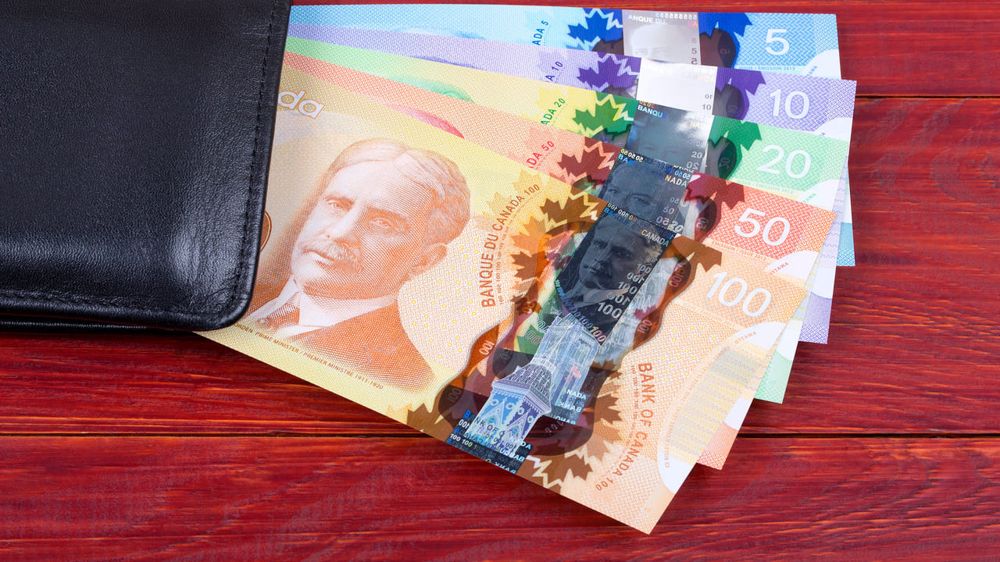
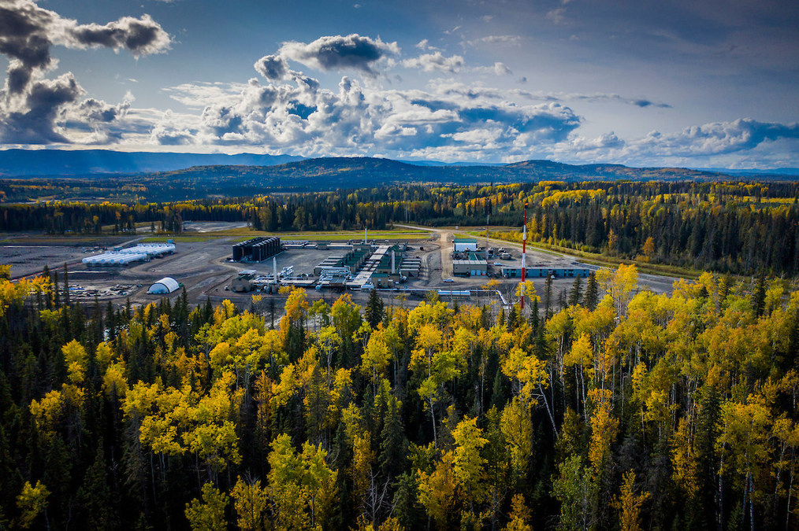

ECONOMIA
CARACTERÍSTICAS GERAIS
A economia do Canadá é forte e diversificada. O país possui grandes reservas de petróleo, gás, minerais e florestas, que impulsionam suas exportações. Também se destaca na agricultura, com produção de trigo e canola.

MOEDA
O dólar canadense (CAD) é a moeda oficial do Canadá. Ele é conhecido pelo apelido “loonie”, por causa do pássaro loon que aparece na moeda de 1 dólar. O CAD é uma moeda forte e estável, amplamente usada no comércio internacional.
RECURSOS NATURAIS
O Canadá possui enormes reservas de petróleo, gás natural, minerais, florestas e água doce. Esses recursos fazem do país um importante exportador de energia e matéria-prima. A província de Alberta é um centro mundial de produção de petróleo, enquanto o norte canadense é rico em mineração.
